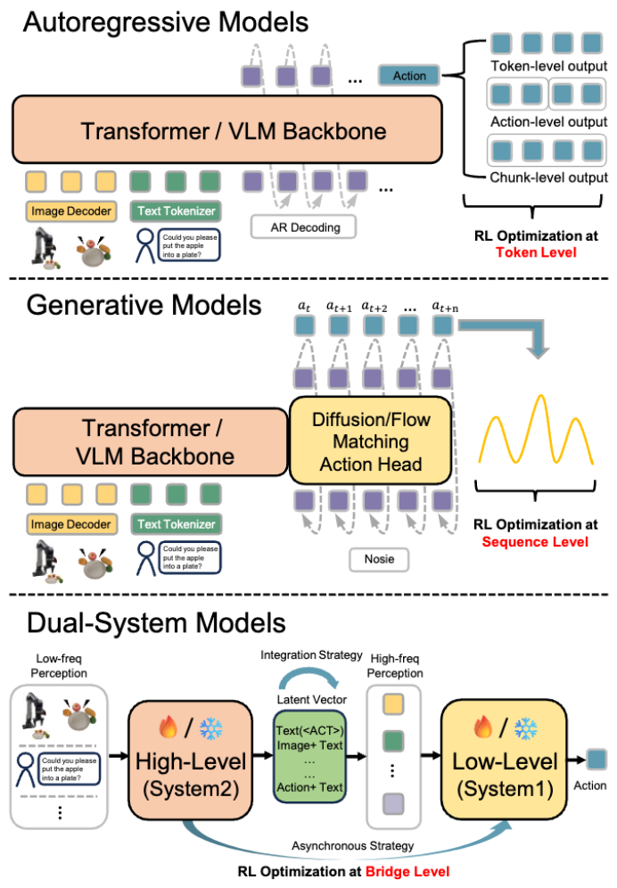
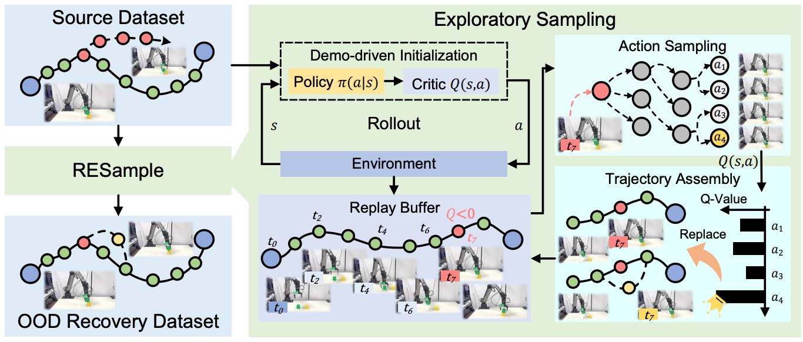
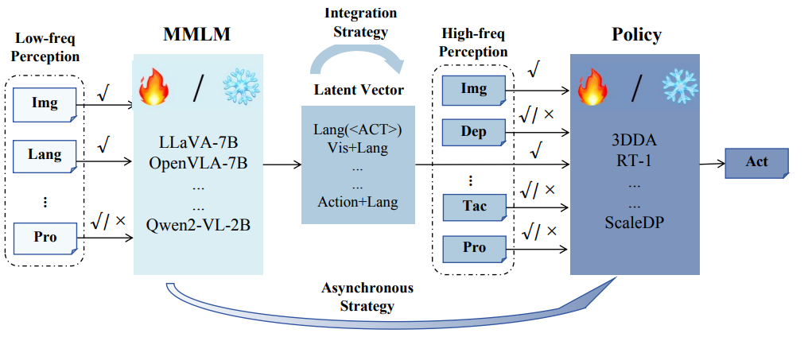
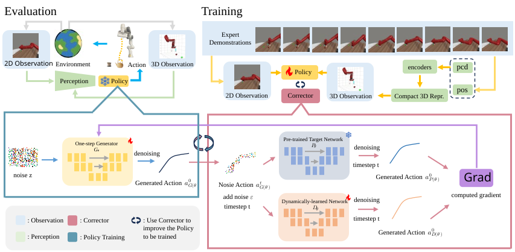
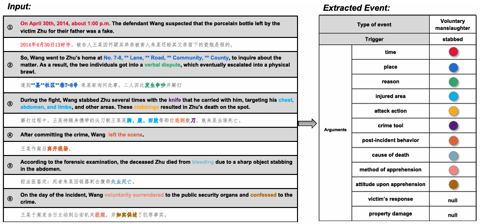

|
Bofang Jia
I am a first-year research-based master student (MEng) at Nanyang Technological University, advised by Prof. Ziwei Wang as part of the Pine Lab.
I received my Bachelor of Engineering degree from Southwest University in June 2025. During my undergraduate studies, I was also a visiting student at Westlake University, advised by Prof. Donglin Wang.
Email
/
Google Scholar
/
GitHub
/
Twitter
/
LinkedIn
/
Blog
/
小红书/rednote
|

|
News
| Aug 2025 |
I became a master student at Nanyang Technological University. |
| May 2025 |
I became an outstanding undergraduate graduate of Southwest University. |
| Jul 2024 |
I became a visiting student at Westlake University. |
| Apr 2024 |
One paper “DLEE: A Dataset for Chinese Document-level Legal Event Extraction” got accepted to NCAA. |
|
|
Research
My research focuses on sample-efficient online robot learning for open-world manipulation. I study how to improve the generalization of VLA under limited real-robot interaction. I think reinforcement learning and other loop paradigm (e.g. World Model, Supervised Learning) are necessary for it.
|
|

|
A Survey on Reinforcement Learning of Vision-Language-Action Models for Robotic Manipulation
Haoyuan Deng, Zhenyu Wu, Haichao Liu, Wenkai Guo, Yuquan Xue, Ziyu Shan, Chuanrui Zhang, Bofang Jia, Yuan Ling, Guanxing Lu, and Ziwei Wang
Github, 2025
This survey takes an end-to-end from pretraining to real-world deployment perspective to systematically review RL-VLA architectures, training paradigms, real-world deployment frameworks, and evaluation benchmarks, showing how reinforcement learning overcomes the OOD generalization limits of purely imitation-trained VLAs and outlining paths toward general robotic systems.
|
|

|
RESample: A Robust Data Augmentation Framework via Exploratory Sampling for Robotic Manipulation
Yuquan Xue, Guanxing Lu, Zhenyu Wu, Chuanrui Zhang, Bofang Jia, Zhengyi Gu, Yansong Tang, Ziwei Wang
arXiv, 2025
RESample avoids collecting large amounts of new failure data and running expensive online RL by using an offline RL value network together with an exploratory sampling mechanism that automatically mines and generates OOD bottleneck states from existing demonstrations and rollouts, and then adds these error-prone, recovery-critical segments into the VLA imitation learning dataset so that the VLA learns to recover from OOD states.
|
|

|
OpenHelix: A Short Survey, Empirical Analysis, and Open-Source Dual-System VLA Model for Robotic Manipulation
Can Cui, Pengxiang Ding, Wenxuan Song, Shuanghao Bai, Xinyang Tong, Zirui Ge, Runze Suo, Wanqi Zhou, Yang Liu, Bofang Jia, Hangyu Liu, Mingyang Sun, Han Zhao, Siteng Huang, Donglin Wang
arXiv, 2025
OpenHelix is a dual-system framework for robotics(VLA Model), which leverages the reasoning capabilities of high-level multimodal large language models (MLLMs) to enhance low-level policies with minimal training cost. This work first summarizes and compares the structural designs of existing dual-system architectures, and then conducts systematic empirical evaluations on their core design elements. Finally, we present a low-cost open-source model to support further research and applications.
|
|

|
Score and Distribution Matching Policy: Advanced Accelerated Visuomotor Policies via Matched Distillation
Bofang Jia, Pengxiang Ding, Can Cui, Mingyang Sun, Pengfang Qian, Siteng Huang, Zhaoxin Fan, Donglin Wang
arXiv, 2024
SDM Policy distills diffusion-based visuomotor policies into one-step generators via a two-stage process combining score and distribution matching. It uses a dual-teacher setup to enhance robustness and achieves 6 times faster inference.
|
|

|
DLEE: A Dataset for Chinese Document-level Legal Event Extraction
Guochuan Xian, Siyuan Du, Xi Tang, Yuan Shi, Bofang Jia, Banghao Tang, Zhefu Leng, Li Li
Neural Computing and Applications (NCAA), 2024
DLEE is a high-quality Chinese dataset for document-level legal event extraction, enabling training and evaluation of NLP models in complex legal reasoning contexts.
|
Honors and Awards
- Outstanding undergraduate graduate of Southwest University
- Southwest University First-Class Scholarship (Top 3%)
- Southwest University Second-Class Scholarship (Top 8%)
|
|